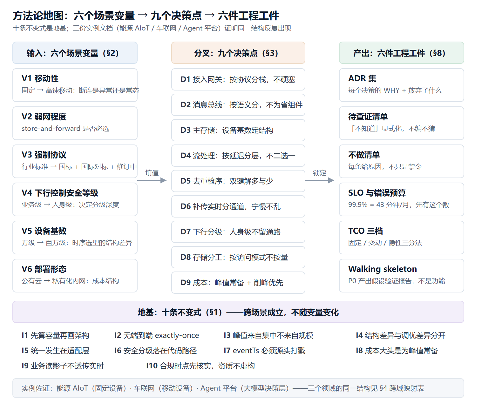

定位：从三份实战方案中抽象出的可复用决策体系，不是三份文档的拼接。 三份实例：① 能源仪表 AIoT 平台（固定设备，行业协议）② 车联网云平台（移动设备，双国标，车规安全）③ 企业级 Agent 平台（大模型决策层，多租户）。 核心论点：这三份方案表面是三个领域，底层是同一套结构。 本文档把这套结构显式化，使下一个场景（储能、充电桩、工业互联网、机器人）可以在一天内完成架构初稿，而不是从零想一个月。 使用方式：§1 背下来 → §2 填六个变量 → §3 逐条决策 → §8 按清单产出工件。
§0 这份方法论是什么、不是什么
是什么：一套「场景变量 → 决策分叉 → 工件产出」的方法。面对一个新的物联网类平台需求，先回答六个场景变量，九个关键决策点的答案就基本被锁死，剩下的只是参数填值。
不是什么： - 不是组件清单（组件是决策的结果，不是决策的起点）； - 不是最佳实践合集（最佳实践不给取舍，本文每条都给「放弃了什么」）； - 不是银弹（§1 的不变式在「设备 < 1 万、无弱网、无下行控制、纯 SaaS」的场景下大半不适用——那种场景不需要方法论，直接用云厂商托管 IoT 套件）。
适用边界：设备规模十万级以上、存在弱网或移动性、有行业强制协议或安全合规要求、私有化或专有云部署——四个条件满足两条以上，这套方法才有显著收益。

§1 十条不变式（跨场景成立，背下来）
每条给出：陈述 → 为什么 → 违反的代价 → 三实例佐证。
I1. 先算容量，再画架构
陈述：架构图之前必须先有容量推导（稳态 / 峰值 / 存储账），哪怕全部是可挑战的假设。 为什么：架构分叉点（分库与否、队列与否、边缘与否）全部由量级决定；不先算账，画出来的图只是装饰。 代价：组件规模拍脑袋 → 上线后要么撑爆要么浪费，且返工发生在最贵的时候。 佐证：能源 AIoT 先算消息量与边缘覆盖率再定 D1；车联网先算 6.7 万/30 万帧/s 再定六层；Agent 平台先算 8 卡 3.5–5.5 QPS 再定分流架构。
I2. 不存在端到端 exactly-once
陈述：分布式链路的事实上限是 at-least-once + 幂等去重；任何号称 exactly-once 的方案都是在某一跳做了隐藏妥协。
为什么：网络重试、进程重启、补传都会制造重复，协议层无法消除，只能在数据层幂等。
代价：把去重推给「MQ 的 exactly-once 语义」→ 重复数据虚高，统计与计费失真。
佐证：三份方案统一采用双键——(vin,msgId) 去重解「多」、(vin,seq) 检序解「少」（车联网 §3）；AIoT 为 (deviceId,pointId,eventTs)；Agent 平台为 (taskId,toolCallId)。键的形状随场景变，双键结构不变。
I3. 峰值来自「集中」，不来自「规模」
陈述：系统的真实峰值几乎从不等于「规模 × 均值」，而来自某种集中：同时回连、同一时刻、同一热点、级联扇出。 为什么：均值假设隐藏的均匀分布在线上不存在；容量设计必须找到本场景的「集中因子」。 代价：按均值设计 → 高峰打穿；按规模上限设计 → 常年为不可能的峰值付折旧。 佐证：车联网的集中因子是「断连车辆同时回连补传」（峰值 ≈ 稳态 4.5 倍）；Agent 平台是「扇出 F」（1 次请求背后是 8–15 次模型调用）；能源 AIoT 是「整点抄表同步」与「停电恢复集中上报」。
I4. 选型差异只有两种：结构差异与调优差异
陈述：结构差异（数据模型、协议性质、失效域）调优救不了；调优差异（跑分、延迟、吞吐）参数能拉开。决策只应在结构差异上做，调优差异靠压测校准。 为什么：在调优差异上做架构决策，会在下一代硬件或一个版本升级后被推翻；忽略结构差异，会在规模到位后被物理击穿。 代价：用 InfluxDB 扛 50 万设备（tag 高基数 OOM 是结构问题）；为 5% 的跑分差异推翻成熟件选型（调优问题被当成结构问题）。 佐证：时序库「一设备一表 vs tag 索引」是结构差异（车联网 ADR-C02）；「Kafka 单 broker 吞吐 5 万还是 8 万」是调优差异，只影响节点数不影响选型。
I5. 统一发生在适配层，不发生在接入层
陈述：多协议、多形态接入时，不在接入层追求组件统一；各自用最合适的件，在协议适配层收敛为统一内部模型。 为什么：把私有二进制塞进标准 broker（或反之）会把两个组件都改成四不像；协议解析的可控性比组件数量重要。 代价：EMQX 写 JT/T 808 插件 → 协议解析失控；自研 MQTT broker → 会话/遗嘱/QoS 状态机重复造轮子。 佐证：车联网 Netty(808) + EMQX(MQTT) 双栈；能源 AIoT 私有 TCP 网关 + MQTT broker 同构；Agent 平台多模型经统一模型网关收敛（同一判断的第三次出现）。
I6. 安全分级落在代码路径上，不落在配置和提示上
陈述：分级不是在 UI 上提示「危险操作请确认」，而是高级别动作在系统中不存在对应的代码路径；能在某处被配置打开的防线，迟早会被配置打开。 为什么：提示级防线依赖每个环节的人不犯错；代码路径级防线不依赖任何人。 代价：一般 IoT 的「远程控制」心智套到车上会出人命；Agent 场景下「模型不该做」会被提示注入绕过。 佐证：车联网 L3（制动/转向/动力）在协议解析层不存在指令码；Agent 平台 L3 工具「默认不给，需单独授权」且凭证不进沙箱。
I7. 时间是数据的一部分：eventTs 必须源头打戳
陈述：事件发生时间必须由源头（设备/车端/调用方）打戳，平台到达时间永远不能替代。 为什么：弱网补传、排队、重试都会使到达时间显著晚于事件时间；用到达时间入库，时间轴全乱，而这类错乱不在告警范围内，会在复盘时才被发现。 代价：补传场景下轨迹时间轴错乱、告警时序失真——弱网平台最常见的隐蔽错误。 佐证：车联网两条硬纪律之首（图 2）；能源 AIoT 双键之一含 eventTs；Agent 平台 session 事件表以事件序号而非到达顺序为准。
I8. 私有化把变动成本锁成固定成本：成本大头是「为峰值常备」
陈述：私有化/专有云排除了按量弹性，资源必须按峰值常备，成本呈阶梯式固定结构；降本的第一手段是削峰（整形、错峰、分流），不是砍稳态。 为什么：稳态资源是必要底座，峰值资源才是可调节项；削峰的工程手段（退避、令牌桶）成本远低于多买的硬件。 代价：按峰值买硬件不做整形 → 夜间利用率 < 10%，钱在空转；砍稳态 → 正常时段制造新瓶颈。 佐证：车联网三道闸中「回连哈希退避」几乎零成本却削掉尖峰；Agent 平台前置分流把 97% 请求挡在 GPU 外，是最大单项降本杠杆。
I9. 业务读影子，不透传实时
陈述：云端维护每个实体的最新状态副本（设备影子/会话状态），业务层默认读副本；只有确需实时性的场景才透传，且透传必须有配额。 为什么：状态查询流量比上报流量高一个量级，全透传会把接入层打穿。 代价：50 万车的状态查询直接透传到接入层 → 网关死于查询而非上报。 佐证：车联网 Redis 设备影子；能源 AIoT 同款；Agent 平台 session 状态存 Redis 事件表、编排层无状态——同一个「影子」思想。
I10. 合规与认证：时点先核实，资质不虚构
陈述：行业强制标准的版本与强制时点必须先检索核实（不要凭记忆写年代号）；对外只能写「对标 XX 评估维度」，绝不写「已通过 XX 认证」。 为什么：标准在持续修订（GB/T 32960 已从 2016 升到 2025），凭记忆写错年份是专业性硬伤；虚假资质宣称不会当场暴露，但被发现时全部可信度一并清零。 代价：方案写 GB/T 32960-2016 → 评审当场露怯；写「通过等保三级」而未过 → 法务风险。 佐证：车联网 §8.1 全部时点经检索核实；Agent 平台 §10.12 明确腾讯白皮书五项认证「是别人的资质」。
§2 场景变量：六个维度决定架构分叉
新场景第一步：填这张表。每行是一个分叉点，取值直接锁定 §3 对应决策。
| # | 变量 | 取值光谱 | 分叉影响 | 三实例取值 |
|---|---|---|---|---|
| V1 | 移动性 | 固定 → 低速移动 → 高速移动 | 断连是异常还是常态 → 弱网补传的权重 | 能源=固定；车=高速移动；Agent=N/A（请求级） |
| V2 | 弱网程度 | 稳定 → 偶发中断 → 常态中断 | store-and-forward 是否必选、终端缓存容量谈判 | 能源=偶发；车=常态；Agent=公网不确定性 |
| V3 | 强制协议 | 无 → 行业标准 → 国标+国际对标+修订中 | 协议适配层深度、解析层可配置性、上报链路 | 能源=DL-T645/Modbus；车=808+32960+R155/R156；Agent=无 |
| V4 | 下行控制安全等级 | 无下行 → 业务级 → 人身/财产级 | 指令分级深度、L3 是否禁做、签名级别 | 能源=业务级；车=人身级；Agent=数据级（L2/L3 工具） |
| V5 | 设备基数 | 万级 → 十万级 → 百万级 | 时序选型（I4）、影子存储、网关集群形态 | 能源=十万级；车=五十万级；Agent=租户×会话 |
| V6 | 部署形态 | 公有云 → 专有云 → 私有化内网 | 成本结构（I8）、弹性策略、数据出网边界 | 三者全部私有化/专有云 |
使用规则：V1×V2 决定数据完整性方案的重量（§5）；V3 决定接入与适配层工作量；V4 决定安全章节厚度；V5 决定存储与网关选型；V6 决定成本模型。六个变量填完，架构的 80% 已经被约束死了——这不是限制，是这套方法的价值。
§3 决策手册：九个决策点
每个决策点：选项 → 判据 → 决策规则 → 常见错误 → 三实例取值。
D1 接入网关：自研 vs 成熟件
- 选项：全自研 / 全成熟件 / 按协议分栈
- 判据：协议性质——私有二进制（解析必须可控）→ 自研；标准协议（状态机复杂且成熟）→ 成熟件
- 规则：按协议分栈，不为统一硬塞（I5）
- 常见错误：为「少一个组件」把私有协议塞进标准 broker；为「技术自主」自研标准协议栈
- 取值：能源=Modbus 自研网关+EMQX；车=Netty(808)+EMQX；Agent=自研 API 网关+开源模型网关
D2 消息总线：一条 vs 两条
- 选项：Kafka 统一 / RocketMQ 统一 / 按数据性质分两条
- 判据：是否存在需要延迟消息与顺序消息的业务事件（控车指令「驻车后才下发」、OTA 任务编排）
- 规则：遥测/日志走 Kafka（吞吐+流生态）；业务事件走 RocketMQ（延迟/顺序原生）——不为少一个组件牺牲语义
- 常见错误：把业务事件也塞 Kafka，然后自研延迟队列
- 取值：车=双总线；能源=Kafka 单总线（无延迟消息诉求）；Agent=任务队列+事件日志（同构于双总线）
D3 时序/主存储：结构匹配优先
- 选项：一设备一表（TDengine）/ tag 索引（InfluxDB）/ 宽表（ClickHouse）
- 判据：设备基数（V5）× 每设备信号数——这是结构差异（I4）
- 规则：基数 ≥ 十万级 → 一设备一表；分析型查询为主 → 宽表另建副本，不混用
- 常见错误：用跑分（调优差异）决策结构问题
- 取值：能源/车=TDengine；Agent=事件溯源表（同一判据的不同形态：写入模式决定存储结构）
D4 流处理：按延迟分层
- 选项：Flink 全真流 / Spark 微批统一 / 分层
- 判据：最严延迟要求是多少——告警/围栏要秒级，报表要吞吐
- 规则：实时链路 Flink、离线链路 Spark，按延迟要求分层，不是二选一
- 常见错误：一套 Spark Streaming 包打天下，告警延迟超标后再打补丁
- 取值：能源/车=Flink+Spark 分层；Agent=同步路径/异步路径（同一分层思想）
D5 去重与检序：双键各自解「多」与「少」
- 判据：链路有哪几跳会制造重复（重试/补传/重启）、哪几跳会制造缺失
- 规则：去重键解「多」（幂等表/主键策略）、有序键解「少」（缺口检测+定向补拉）——两把钥匙开两把锁，一把钥匙开两把锁的方案必有一把是假的（I2）
- 常见错误：只用去重键 → 数据有洞不自知
- 取值：三实例双键形状不同、结构相同（见 I2 佐证）
D6 补传与实时：合并 vs 分通道
- 判据：补传数据的时间戳与到达时间是否存在系统性差异（V2 强则必有）
- 规则：有差异 → 分通道（独立 topic + 独立链路），宁可多一条链路不可污染实时判定
- 常见错误：合并 → 历史告警被当成现在告警，车队出隧道时误报爆发
- 取值：车=分通道（ADR-C03）；能源=分通道；Agent=评测流量与生产流量隔离（同一原则）
D7 下行控制：分级深度
- 判据：失效后果的严重度——设备变砖（业务级）还是人身安全（人身级）
- 规则：按后果分级，每级有独立鉴权与审计；人身级在架构上不留通路（I6）
- 常见错误：用「权限配置」分级——配置是可打开的
- 取值：车=L0–L3（L3 禁做）；Agent=L0–L3 工具（L3 默认不给）；能源=L0–L2
D8 存储分工：按访问模式不按数据量
- 判据：谁读、怎么读（点查/范围扫/全文/聚合）
- 规则：时序库管时间轴、影子库管最新态、关系库管业务一致、归档库管原始帧、检索引擎管排查——每类数据只进最匹配访问模式的库
- 常见错误：砍原始帧归档省钱 → 双键校验有争议时无仲裁依据
- 取值：三实例一致（车联网 §5.4 / Agent 事件表 / AIoT OSS 归档）
D9 成本结构：峰值常备 vs 弹性溢出
- 判据：V6 部署形态 + 数据能否出网
- 规则：私有化 → 峰值常备 + 削峰优先（I8）；可出网 → 溢出到共享集群需书面授权
- 常见错误：私有化架构里按公有云思维留「自动扩缩容」开关——扩不出资源
- 取值：三实例全部峰值常备；Agent 平台溢出列为商务待查证（ADR-009）
§4 跨域映射表：同一结构在三个领域的化身
这是本方法论的核心证据——如果下列映射成立，则「方法论存在」被证实，而不是口号。
| 结构 | 能源 AIoT | 车联网 | Agent 平台 |
|---|---|---|---|
| 集中因子（I3） | 整点抄表同步、停电恢复集中上报 | 断连车辆同时回连补传 | 扇出 F：1 请求 = 8–15 次模型调用 |
| 准入整形（I3 的解） | 网关令牌桶 | 三道闸：令牌桶+退避错峰+优先级降级 | 四层控流：入口/信号量/编排/配额 |
| 安全分级（I6） | 控制指令需审批 | 控车 L0–L3，L3 无代码路径 | 工具 L0–L3，L3 默认不给 |
| 双键（I2） | (deviceId,pointId,eventTs) + (deviceId,seq) | (vin,msgId) + (vin,seq) | (taskId,toolCallId) + (taskId,stepSeq) |
| 影子（I9） | 设备影子 | 车辆影子（Redis） | session 状态（事件表+Redis） |
| 协议适配层（I5） | Modbus/DL-T645→统一帧 | 808/32960/MQTT→统一内部帧 | 多模型 API→统一调用契约 |
| 可回放仲裁（D8） | OSS 原始帧归档 | OSS/HDFS 原始帧归档 | session 事件表（崩溃续跑依据） |
| 降级 | 边缘自治降级 | 优先级 P3/P4 延后 | D0–D5 降级阶梯 |
| 压测校准的敏感参数 | 边缘覆盖真实率 | 单节点连接数/压缩比/并行度 | 单卡吞吐/扇出 F/前缀命中率 |
| 资源预算 | 边缘算力预算 | 帧率预算 | token 预算（硬预算四件套） |
一句话讲清：「三个项目不是三次重复劳动——能源仪表、T-BOX、大模型在架构上是同一台机器的三种外壳：都是受限资源下的不可靠输入 + 端到端完整性 + 分级下行 + 削峰。每做下一个方案周期都在缩短，因为决策树是复用的。」
§5 数据完整性方法论
完整性的敌人有且只有四类：多（重复）、少（丢失）、乱（乱序/时间轴错乱）、假（伪造/注入）。每一类有且只有对应的机制，缺一不可：
| 敌人 | 机制 | 落点 | 验收 |
|---|---|---|---|
| 多 | 去重键幂等 | 入库前 | 重传 N 次入库 1 次 |
| 少 | 有序键缺口检测 + 定向补拉 | 流处理状态算子 | 断连恢复后完整率 100% |
| 乱 | eventTs 源头打戳 + 补传分通道 | 协议契约 + 总线 | 补传不触发实时告警 |
| 假 | 消息级签名 + 审计独立 | 网关验签 + 独立审计库 | 伪造指令不可执行 |
链路的每一跳都要回答「这一跳会制造多/少/乱/假中的哪一种」。回答不上来的跳，就是将来出事故的跳——把这条链画出来逐跳标注，是评审任何数据平台的第一动作（AIoT 方案 称之为失效点分析，车联网为 8 跳，Agent 平台为 12 跳，方法相同）。
§6 容量与成本方法论
五步流程（顺序不可换）：
- 算稳态：规模 × 频率 × 单帧大小 → 稳态吞吐与带宽；
- 找集中因子（I3）：回答「什么事件会让流量短时间放大 3–5 倍」——找不到就等于没做容量设计；
- 定设计峰值：稳态 × 集中放大系数（车联网取 4.5 倍），并标注推导假设；
- 反推组件规模：单节点能力 × 节点数 ≥ 峰值，全部标注「推导估算，P0 压测校准」；
- 列敏感参数：找出「偏 2 倍则集群规模差 2 倍」的参数（通常 3 个以内），P0 优先实测这三个。
成本侧三条：私有化=阶梯式固定成本（I8）；TCO 必须分固定/变动/隐性三类（隐性=评测集维护、合规复测、on-call，最易漏）；金额一律标「示例假设，非报价」，采购价与机房归属列入待查证，架构师不拍板。
§7 安全合规方法论
三条主线，按 V4（下行安全等级）决定厚度：
- 分级（I6）：按失效后果分级，最高级在代码路径上禁做；
- 边界：责任共担（平台方/客户方/模型方各自的职责边界写进合同附件）、审计独立（与业务库物理分离、只追加）；
- 合规时效（I10）：强制标准清单必须检索核实版本与强制时点，合规工件 P0 进架构——事后补的成本是重构级的（数据分类分级是字段级打标，改数据模型就是重构）。
一条纪律：对外材料中，自己没拿到的认证只能写「对标 XX 评估维度」。这条不妥协。
§8 落地纪律：六件工程工件
每接一个平台类项目，交付物固定为这六件，缺一件就不算架构完成：
| 工件 | 作用 | 最低要求 |
|---|---|---|
| ADR 集 | 记录关键决策的 WHY、放弃了什么、如何回退 | 每条含 Context/Decision/Consequences(+/-)/Reversibility；单向门必须显式标注 |
| 待查证清单 | 把「不知道」显式化，分级（阻塞开工/阻塞上线/可并行） | 每条写明「不定什么就不能定」；不编、不猜 |
| 不做清单 | 防止团队「顺手」引入已知坏味道 | 每条给原因，不是只给禁令 |
| SLO 与错误预算 | 把「可靠」变成数字 | 99.9% = 43 分钟/月，先有这个数才谈得上降级策略 |
| TCO 三档 | 让老板看到规模与钱的关系 | 固定/变动/隐性三分法；示例假设显式标注 |
| Walking skeleton 路线 | 先骨架后厚度，每阶段有可验证判据 | P0 的产出是假设验证报告，不是功能 |
外加两条工作纪律：长中文文档写完必跑 Unicode 白名单扫描（防外文词污染）；方案中的推导估算被质疑时，第一反应是给出校准路径而不是辩护——承认估算、给出压测方法，比精确的错误数字更有说服力。
§9 三实例对照矩阵
| 维度 | 能源 AIoT | 车联网 | Agent 平台 |
|---|---|---|---|
| 一句话口径 | 十万级固定设备 + 边缘覆盖是瓶颈 | 50 万移动设备 + 弱网常态 + 车规安全 | 多租户决策层 + GPU 受限 + 分级工具 |
| 容量锚点 | 边缘覆盖率（不是云端） | 6.7 万稳态 / 30 万峰值帧/s | 8 卡 3.5–5.5 QPS（推导估算） |
| 集中因子 | 整点抄表、停电恢复 | 回连补传（4.5 倍） | 扇出 F（8–15 倍） |
| 最强安全约束 | 等保三级 + 密评 | GB 44495/44496 强制 + L3 禁做 | OWASP ASI01–10 + 凭证不进沙箱 |
| 落地周期 | 分阶段边缘铺设 | 24 周 P0–P3 | 24 周 P0–P3（约 137 人天） |
| 负责人亲写 | 边缘接入与协议 | 网关接入、数据解析、补传 | 状态机、控流、评测门禁 |
| 最大风险 | 边缘覆盖率不达预期 | 数据有洞不自知 | 能扛压但判不准（评测缺失） |
§10 常见质疑与回应
30 秒版：平台架构的方法是固定的——先算容量再找集中因子，六个场景变量锁定九个决策点，完整性按多/少/乱/假四类敌人配机制，安全分级落在代码路径上。能源仪表、车联网、Agent 平台三个方案是同一套方法的三个实例：决策树复用，所以每下一个方案周期都在缩短。
质疑一：这套方法和别人的区别在哪：两点。一是每条决策都写了放弃了什么——不给取舍的架构意见没有信息量；二是估算全部标注假设并自带压测校准路径——不捍卫数字，只捍卫得到数字的方法。
质疑二：这套方法的最大局限：它假设了规模与合规压力（§0 四个条件）。小规模纯 SaaS 场景下它是过度工程——知道方法论什么时候不适用，和方法论本身一样重要。
本文档与三份实例文档构成完整体系：方法论负责「换场景能复用」，实例文档负责「这个场景能落地」。实例文档中的每个决策都能回溯到本文的 I1–I10 与 D1–D9；本文的每条规则都有至少两个实例佐证——这是它区别于「架构鸡汤」的地方。